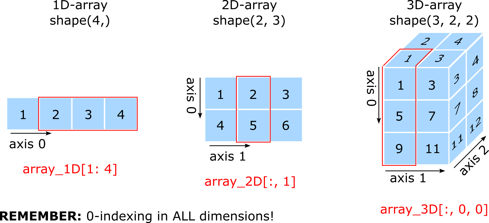

Introduction to NumPy - Numerical Python#
NumPy - numerical Python - is an external library for scientific computing in Python.
It provides a multidimensional array object (ndarray) and a multitude of of routines for fast operations on arrays, including:
mathematical operations
logical operations
shape manipulation
sorting
selecting
input/output (I/O)
basic linear algebra
basic statistical operations
and much more…
NOTE: NumPy arrays are homogeneous. Each array can only hold elements of one data type (in contrast to the other compound data types that can hold different) Data types allowed in NumPy arrays:
intfloatcomplex(for complex numbers)boolstr
Read more in the NumPy documentation
# First we need to import the library
import numpy as np
The NymPy array#
# Creating an array directly from numbers
an_array = np.array([1, 2, 3, 4, 5, 6])
print("an array: ", an_array)
#Creating an array of strings
a_str_array = np.array(["Nanna", "Anna", "Eric", "Viggo"])
print("a string array: ", a_str_array)
# Making an array from a list
a_list = [1, 2, 3, 4, 5, 6]
an_array_from_list = np.array(a_list)
print(an_array, type(an_array))
an array: [1 2 3 4 5 6]
a string array: ['Nanna' 'Anna' 'Eric' 'Viggo']
[1 2 3 4 5 6] <class 'numpy.ndarray'>
# Multidimensional arrays
array_1D = np.array([1, 2])
array_2D = np.array([[1, 2],[3, 4]])
array_3D = np.array(([[[1, 2],[3, 4]],[[5, 6],[7, 8]]]))
# etc.
# Printing the arrays, the number of dimensions and their shape
print('array_1D')
print(array_1D)
print(array_1D.ndim, array_1D.shape)
print('array_2D')
print(array_2D)
print(array_2D.ndim, array_2D.shape)
print('array_3D')
print(array_3D)
print(array_3D.ndim, array_3D.shape)
array_1D
[1 2]
1 (2,)
array_2D
[[1 2]
[3 4]]
2 (2, 2)
array_3D
[[[1 2]
[3 4]]
[[5 6]
[7 8]]]
3 (2, 2, 2)
Mathematical operations#
Element-wise arithmetic operations (between equally-sized arrays where elements are numbers)
Addition
Subtraction
Multiplication
Division
Exponentiation
Modulus
Scalar operations (between scalar and array)
Addition
Subtraction
Multiplication
Division
This works by performing the operation on each element of the array.
NOTE
Pay attention to whether the operations output integers or floats.
Below is an example of integer input arrays - however - not all operations gives integer output arrays!
vector1 = np.array([1, 3, 4])
vector2 = np.array([3, 4, 5])
# Element-wise addition (+) or (np.add(vector1, vector2))
vector_addition = vector1 + vector2
print("vector addition: ", vector_addition)
# Element-wise subtraction (-) or (np.subtract(vector1, vector2))
vector_subtract = vector1 - vector2
print("vector subtraction: ", vector_subtract)
# Element-wise multiplication (*) or (np.multiply(vector1, vector2))
vector_multiply = vector1 * vector2
print("vector multiplication: ", vector_multiply)
# Element-wise division (/) - implies float division in Python3 or np.divide(vector1, vector2)
vector_division = vector1 / vector2
print("vector division: ", vector_division)
# Element-wise exponentiation (**) or (np.power(vector1, 2))
vector_exponentiation = vector1 ** 2
print("vector exponentiation: ", vector_exponentiation)
# Element-wise modulus (%) or (np.mod(vector1, vector2))
vector1_modulus_vector2 = vector1 % vector2
print("vector modulus: ", vector1_modulus_vector2)
test = vector1 + 4
print(test)
vector addition: [4 7 9]
vector subtraction: [-2 -1 -1]
vector multiplication: [ 3 12 20]
vector division: [0.33333333 0.75 0.8 ]
vector exponentiation: [ 1 9 16]
vector modulus: [1 3 4]
[5 7 8]
vector1 = np.array([1, 3, 4])
# Scalar addition
scalar_add = vector1 + 4
print("scalar add: ", scalar_add)
# Scalar subtraction
scalar_sub = vector1 - 2
print("scalar sub: ", scalar_sub)
# Scalar multiplication
scalar_multiply = vector1 * 2
print("scalar multiply: ", scalar_multiply)
# Scalar_division
scalar_divide = vector1 / 2
print("scalar divide: ", scalar_divide)
scalar add: [5 7 8]
scalar sub: [-1 1 2]
scalar multiply: [2 6 8]
scalar divide: [0.5 1.5 2. ]
Array creation functions#
# Create an array filled with zeros of specified dimensions. Here a 2D array with shape (3, 4)
zeros_array_2D = np.zeros((3, 4))
print("2D array with zeros: ", zeros_array_2D)
# Create an array filled with ones of the specified dimensions. Here an 1D array with 4 elements
ones_array_1D = np.ones((4))
print("1D-array with ones: ", ones_array_1D)
# Create an array filled with zeros with the same dimension as array argument.
array_a = np.array([1, 2, 5, 6, 7])
zeros_array_like_array_a = np.zeros_like(array_a)
print("array a: ", array_a, array_a.shape)
print("zero array like array a: ", zeros_array_like_array_a, zeros_array_like_array_a.shape)
# Create an array if values in the range start, stop, step of dtype with numpy.arange(start, stop, step, dtype)
# Very similar to range except that it returns and ndarray
arange_float_array = np.arange(1, 10, 2, float)
print(arange_float_array)
arange_int_array = np.arange(1, 10, 2, int)
print(arange_int_array)
2D array with zeros: [[0. 0. 0. 0.]
[0. 0. 0. 0.]
[0. 0. 0. 0.]]
1D-array with ones: [1. 1. 1. 1.]
array a: [1 2 5 6 7] (5,)
zero array like array a: [0 0 0 0 0] (5,)
[1. 3. 5. 7. 9.]
[1 3 5 7 9]
Indexing and slicing#
Like we have seen for the standard compound data types, we can index and slice an ndarray.
If the array is multidimensional, you will need to specify the index or slicing for each dimension.
Remember: Python counts from zero!!!
An illustration of the example arrays used below and the use of slicing

# First, in one dimension
array_1D = np.array([1, 2, 3, 4])
print("array_1D: ", array_1D, array_1D.shape)
# The element with index 0
print(array_1D[0])
# The element with index 2
print(array_1D[2])
# The last element (index -1)
print(array_1D[-1])
# Elements in range 1 to 3 (remember the slicing ends at stop - 1)
print(array_1D[1:4])
array_1D: [1 2 3 4] (4,)
1
3
4
[2 3 4]
# Then, in two dimensions
array_2D = np.array([[1, 2, 3],[4, 5, 6]])
print("array_2D: ", array_2D, array_2D.shape)
# The element with indices (0, 0)
print("The element with indices (0, 0): ", array_2D[0, 0])
# The element with indices (0, 1)
print("The element with indices (0, 1): ", array_2D[0, 1])
# The "last element" - in each dimension
print("The 'last element' - in each dimension ", array_2D[-1, -1])
# The entire first row
print("The entire first row: ", array_2D[0, :])
# The entire second colomn
print("The entire second colomn: ", array_2D[:, 1])
array_2D: [[1 2 3]
[4 5 6]] (2, 3)
The element with indices (0, 0): 1
The element with indices (0, 1): 2
The 'last element' - in each dimension 6
The entire first row: [1 2 3]
The entire second colomn: [2 5]
# Now in three dimensions
array_3D = np.array([[[1, 2],[3, 4]],[[5, 6],[7, 8]],[[9, 10],[11, 12]]])
print("array_3D: ", array_3D, array_3D.shape)
# The element with indices (0, 0, 0)
print("The element with indices (0, 0, 0): ", array_3D[0, 0, 0])
# The element with indices (2, 1, 0)
print("The element with indices (2, 1, 0): ", array_3D[2, 1, 0])
# Array corresponding to slicing the array: entire first dimension, element 0 from second, element 0 from third
print("Slice: array ", array_3D[:, 0, 0])
# And we could continue to higher-dimensional arrays in an analogous fashion...
array_3D: [[[ 1 2]
[ 3 4]]
[[ 5 6]
[ 7 8]]
[[ 9 10]
[11 12]]] (3, 2, 2)
The element with indices (0, 0, 0): 1
The element with indices (2, 1, 0): 11
Slice: array [1 5 9]
Boolean masking and indexing#
You can also filter elements from an array based on a specific condition. We do this by using boolean masks to specify the condition.
Boolean indexing: Allows you to create a filtered subset of an array by passing a boolean mask as an index.
Boolean mask: Selects only those elements in the array that have a True value at the corresponding index position.
subarray = array[boolean_mask]
Note! In boolean masks, you must use the bitwise logical operators:
&: instead ofandkeyword|: instead oforkeyword
The difference between the and, or keywords and the &, | operators:
The
and,orkeywords gauge the truth/falseness of the entire object (that is, it treats the object as a single Boolean entity)The
&,|operators gauge the bits within each object
# Our example array
an_array = np.array([35, 26, 37, 45, 90, 76, 88, 23, 11, 2])
print("an_array: ", an_array, an_array.shape)
# The boolean mask = an array that contains True if the condition (here an_array > 20) is satisfied, otherwise False (here, an_array <= 20)
boolean_mask = an_array > 20
print("boolean_mask: ", boolean_mask, boolean_mask.shape)
# Boolean indexing: That is, apply the boolean mask to create a subset of an_array
an_array_filtered = an_array[boolean_mask]
print("Filtered an_array: ", an_array_filtered, an_array_filtered.shape)
an_array: [35 26 37 45 90 76 88 23 11 2] (10,)
boolean_mask: [ True True True True True True True True False False] (10,)
Filtered an_array: [35 26 37 45 90 76 88 23] (8,)
# A more complicated mask using combined logical operators - NOTE! Need to use the bitwise logic operators: | (or) & (and)
boolean_mask = (an_array < 30) | (an_array > 80)
print("boolean_mask: ", boolean_mask, boolean_mask.shape)
# Boolean indexing: That is, apply the boolean mask to create a subset of an_array
an_array_filtered = an_array[boolean_mask]
print("Filtered an_array: ", an_array_filtered, an_array_filtered.shape)
boolean_mask: [False True False False True False True True True True] (10,)
Filtered an_array: [26 90 88 23 11 2] (6,)
Conditions and arrays#
The numpy.where(<condition>, <firstarray>, <secondarray>) function yields the expression x if condition is satisfied, otherwise y.
For boolean arrays, numpy.any evaluates whether one or more values in an array is True, while numpy.all checks if every value is True.
array1 = np.array(["verb1", "verb2", "verb3", "verb4", "verb5", "verb6"])
array2 = np.array(["Martin", "Nanna", "Annett", "Eric", "Amelie", "Viggo"])
condition = np.array([True, False, False, True, True, False])
result = np.where(condition, array1, array2)
print(result)
['verb1' 'Nanna' 'Annett' 'verb4' 'verb5' 'Viggo']
bool_array = np.array([True, False, False, True, True])
# numpy.any
print(np.any(bool_array))
# numpy.all
print(np.all(bool_array))
True
False
Saving and loading NumPy arrays#
To save a NumPy array in NumPy file (suffix .npy), we use
numpy.save(<filename>, >array_name>)To load a NumPy array from a NumPy file, we use
numpy.load(<filename.npy>)
array_to_save = np.array([1, 2, 3, 4, 5])
np.save("array_to_save", array_to_save)
loaded_array = np.load("array_to_save.npy")
print("loaded array: ", loaded_array)
loaded array: [1 2 3 4 5]
Linear algebra with NumPy#
NumPy arrays are most often used for numerical data and linear algebra. There is a linear algebra module in NumPy:
numpy.linalg
It contains many different linear algebra functions. For more information, please have a look at the Numpy linear algera manual
# As an example, numpy.linalg can perform matrix diagonalization
matrix = np.array([[1, 2],[2, 4]])
eigvalues, eigvectors = np.linalg.eig(matrix)
print("Eigenvalues: ", eigvalues)
print("Eigenvectors: ", eigvectors)
Eigenvalues: [0. 5.]
Eigenvectors: [[-0.89442719 -0.4472136 ]
[ 0.4472136 -0.89442719]]